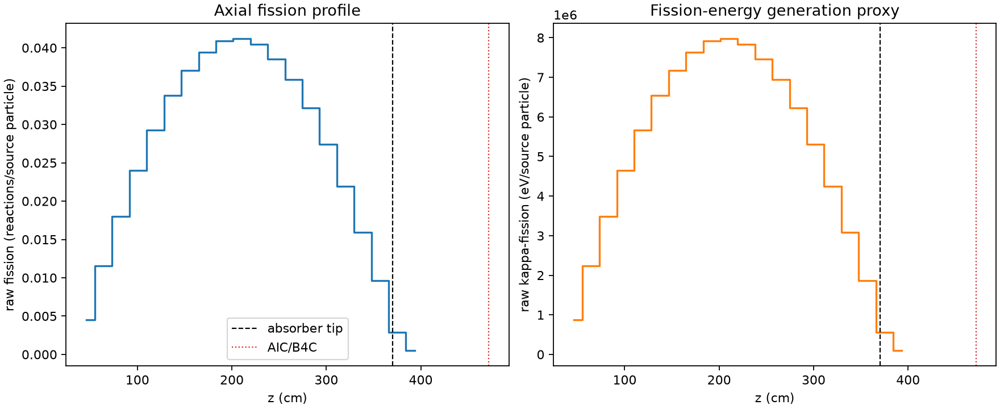
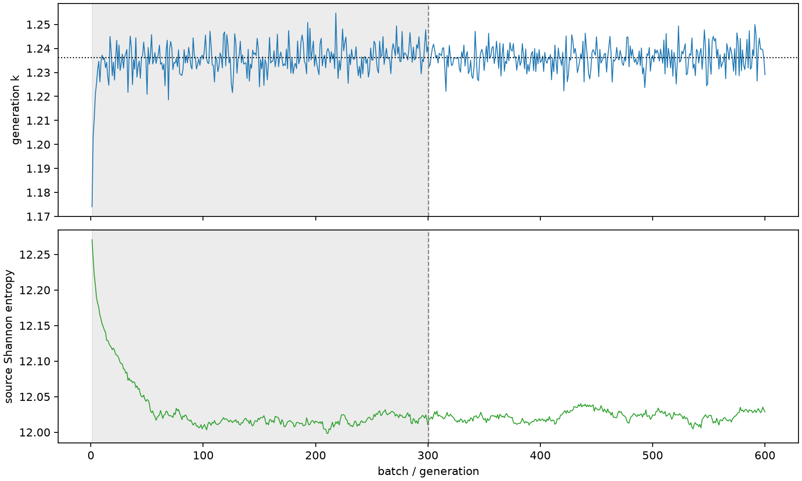

| field | value |
|---|---|
| experiment | V2-STAGE_256_OGRENCI_03-0019 |
| k | 1.2360896156884438 |
| MC standard error | 0.0001840104116478545 |
| seconds | 913.1407883049978 |
| acceptance | not_assessed |
| convergence | review_required |
Completed is output integrity only; physical and statistical review required. Zero tallies do not prove zero production or zero uncertainty.
| diagnostic | value |
|---|---|
| geometric fuel voxels | 5280 |
| zero fission tally voxels | 0 |
| low signal fuel voxels | 0 |
| low signal fission share | 0.0 |
| low signal kappa share | 0.0 |
| important fission share | 0.9500456757899713 |
| previous filter included | 5280 |
| duration estimate s | 1562.5173488400023 |
| actual minus estimate s | -649.3765605350045 |
| fission relative MC error | statistics |
|---|---|
| all_geometric_fuel | {"voxels": 5280, "positive_mean_voxels": 5280, "zero_mean_voxels": 0, "undefined_relative_error_voxels": 0, "median": 0.010464671210830662, "p95": 0.03842393705202209, "maximum": 0.09352284379602409} |
| low_signal | {"voxels": 0, "positive_mean_voxels": 0, "zero_mean_voxels": 0, "undefined_relative_error_voxels": 0, "median": null, "p95": null, "maximum": null} |
| important_95pct | {"voxels": 4045, "positive_mean_voxels": 4045, "zero_mean_voxels": 0, "undefined_relative_error_voxels": 0, "median": 0.00967176393252849, "p95": 0.01420372281452005, "maximum": 0.017761841158682623} |
| outside_previous_filter | {"voxels": 0, "positive_mean_voxels": 0, "zero_mean_voxels": 0, "undefined_relative_error_voxels": 0, "median": null, "p95": null, "maximum": null} |
| kappa_fission relative MC error | statistics |
|---|---|
| all_geometric_fuel | {"voxels": 5280, "positive_mean_voxels": 5280, "zero_mean_voxels": 0, "undefined_relative_error_voxels": 0, "median": 0.010452982475226172, "p95": 0.038375099577631126, "maximum": 0.09340814114998858} |
| low_signal | {"voxels": 0, "positive_mean_voxels": 0, "zero_mean_voxels": 0, "undefined_relative_error_voxels": 0, "median": null, "p95": null, "maximum": null} |
| important_95pct | {"voxels": 4045, "positive_mean_voxels": 4045, "zero_mean_voxels": 0, "undefined_relative_error_voxels": 0, "median": 0.009661971872137767, "p95": 0.014187214434869854, "maximum": 0.017741323958097684} |
| outside_previous_filter | {"voxels": 0, "positive_mean_voxels": 0, "zero_mean_voxels": 0, "undefined_relative_error_voxels": 0, "median": null, "p95": null, "maximum": null} |
| axial bin | fission share | kappa-fission share |
|---|---|---|
| 1 | 0.0089942270833394 | 0.00899463041966684 |
| 2 | 0.022832656959768674 | 0.022832594485312913 |
| 3 | 0.035726110682443024 | 0.03572605354905123 |
| 4 | 0.047556042363307446 | 0.04755600878474082 |
| 5 | 0.05790930218412148 | 0.057909227919378525 |
| 6 | 0.06685305282660647 | 0.06685269437324122 |
| 7 | 0.07344852851215548 | 0.07344823808876637 |
| 8 | 0.07809138544003495 | 0.0780912150433089 |
| 9 | 0.0809543151161291 | 0.08095407863003137 |
| 10 | 0.08153654118128725 | 0.08153648912489529 |
| 11 | 0.08008658211695363 | 0.08008649874960881 |
| 12 | 0.0763224153141689 | 0.07632228765233308 |
| 13 | 0.07098920720733451 | 0.07098917859432854 |
| 14 | 0.063686610041288 | 0.06368659675176523 |
| 15 | 0.05426924332613765 | 0.054269131483948616 |
| 16 | 0.043368175059356355 | 0.04336811118920804 |
| 17 | 0.031591215712752176 | 0.03159123306673633 |
| 18 | 0.019014135339048565 | 0.019014105845945168 |
| 19 | 0.005740984503517416 | 0.0057419641880162575 |
| 20 | 0.0010292690302494557 | 0.0010296620597164434 |
Histories include the inactive-to-active transition at batch 300. kappa-fission approximates fission energy production, not total heat deposition.

